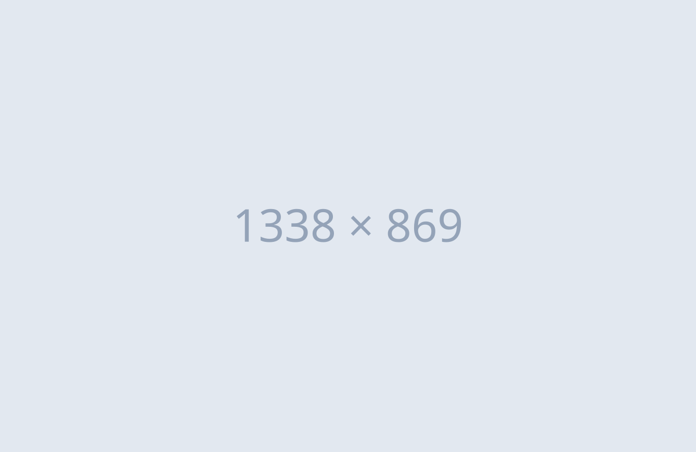
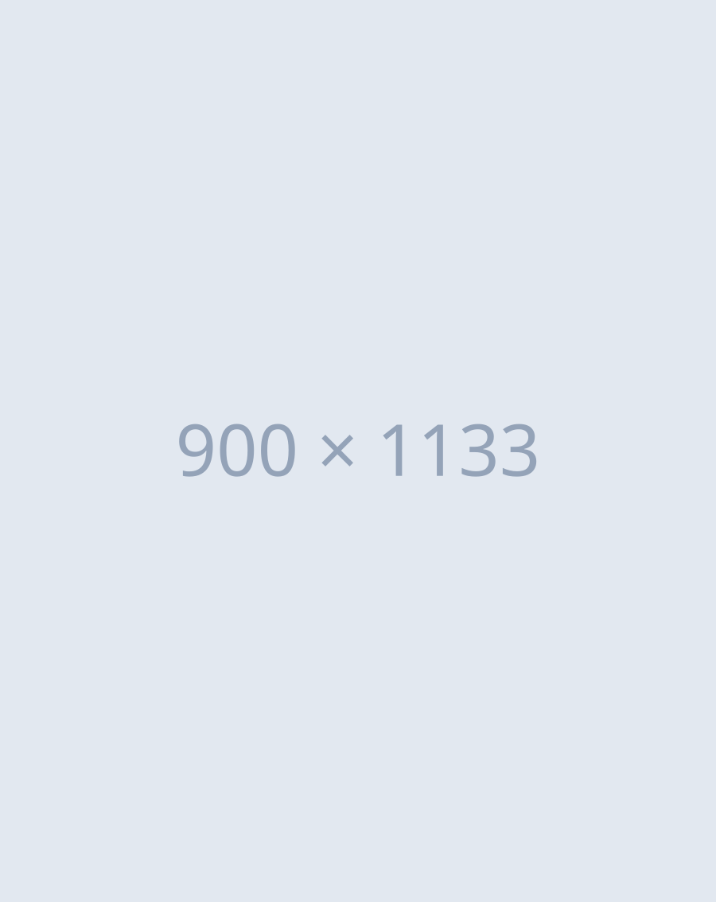
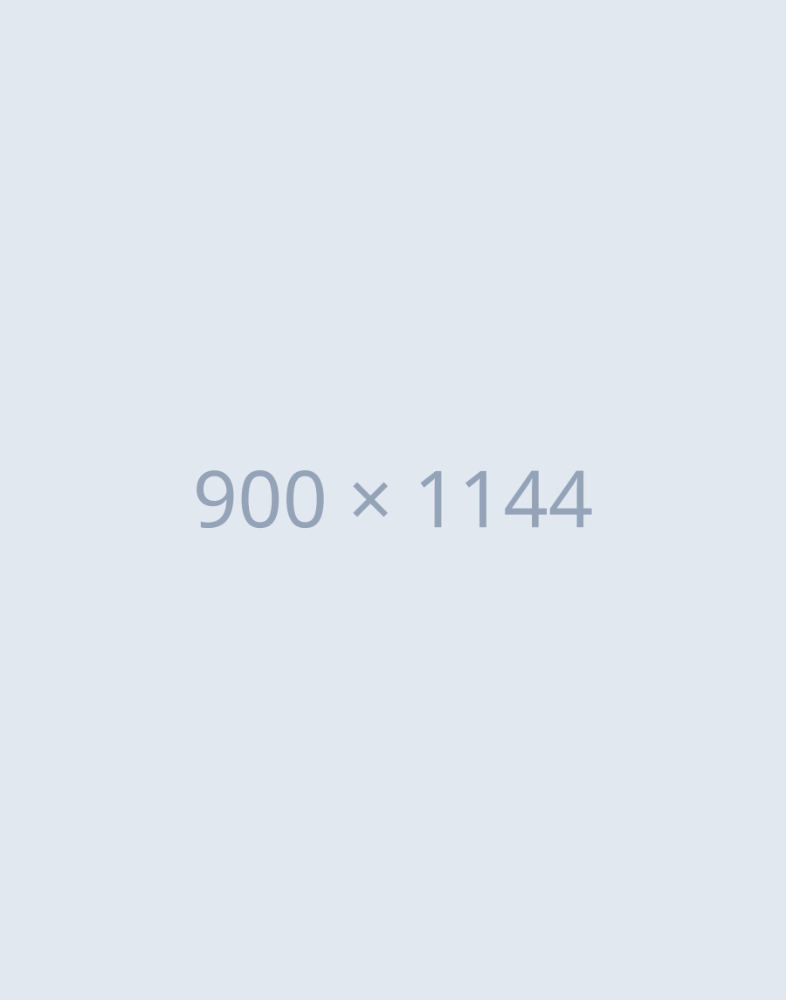
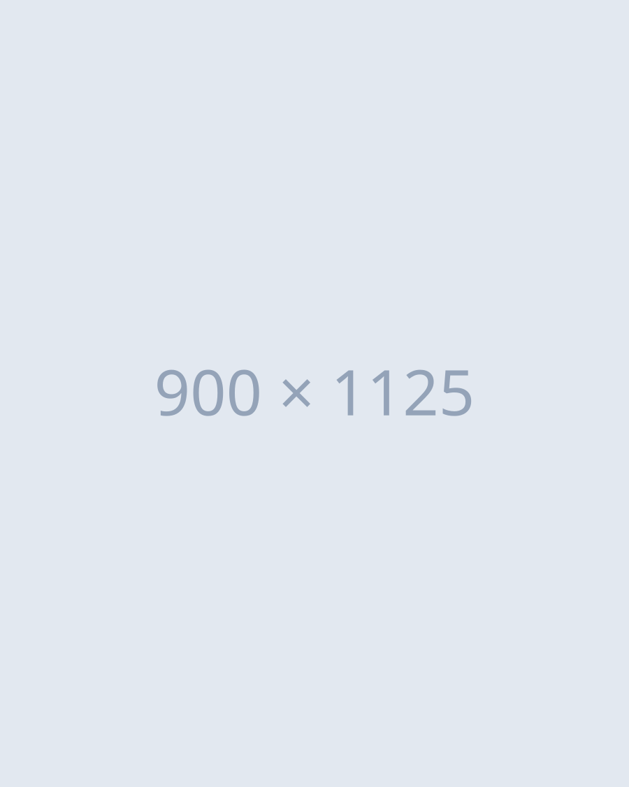
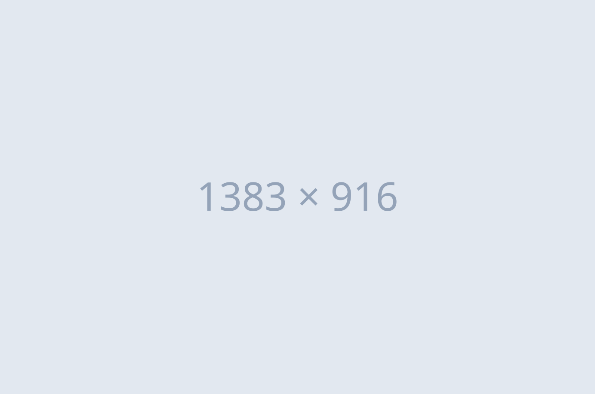
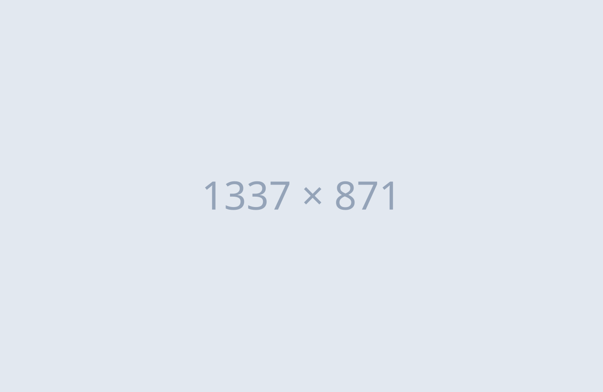

$180M cost-out over two years- Energy & Utilities
- Cost & Performance
Vantor Energy rebuilt its cost base without cutting field crews
Two years, 14 workstreams and one value tracker the board reads every month.
Enterprise Transformation Since 2012
Operating models, cost programs and AI adoption for enterprises above $1B, run by senior teams.

Run-rate value identified
$2.1B
For 140 enterprise clients, 2020–2026
We stay until the new way of working is simply how you work.
 380 peoplein 3 cities
380 peoplein 3 cities
 Film 2:40
How a 90-day transformation office works
Film 2:40
How a 90-day transformation office works
Strategy, operations, technology and people move together or not at all. Every program we run carries all four, under one partner.
Where to play, what to stop, and the operating model that follows from it.
Cost, process and service redesigned around the work, not the org chart.
Data, AI and platforms put to work inside the business, not beside it.
Leaders, roles and habits that keep the change long after we leave.
140 enterprise clients across three continents

Where We Start
Most programs start with one capability and a 90-day plan. The transformation office keeps every move tied to value from the first week.
Decision rights, spans and layers, and the few roles that carry the strategy. Leaders sign off the design before anyone is moved.
A line-by-line baseline, then savings with an owner and a date. We cut cost the business can live without and protect the rest.
Two or three use cases with a measurable owner, the data they need and the controls risk will approve, then scaled from there.
Legacy estates moved in waves, each one paying for the next. The first wave goes live before the business case is a year old.
Claims, onboarding and service journeys mapped from the customer side, then rebuilt with the teams who run them.
One office, one value tracker, one weekly meeting that decides. It runs your initiatives, ours and the vendors' in the same rhythm.
Every figure is signed off by the client's finance team before we print it. These are the ones we are asked about most.
“We had run cost programs before. This one found $180M over two years, and every dollar had an owner.”
Hannah RhodesCFO, Vantor Energy
Read the Story
Industries
Our partners have run claims floors, plants and trading desks. They know where the cost hides and who has to say yes.
All IndustriesBanks and payments: onboarding, risk and cost programs that the regulator signs off.
Claims, underwriting and distribution, redesigned end to end with the people who run them.
Cost-out, field operations and the platforms behind a changing grid.
Plants, supply chains and the operating model that sits above them.
 05Retail & Consumer
05Retail & Consumer
Store operations, one commerce platform and a leaner support center.
 06Telecom & Media
06Telecom & Media
Network cost, customer care and faster product releases.
Agencies modernizing services without a big-bang rebuild.
Our Work

$180M cost-out over two yearsTwo years, 14 workstreams and one value tracker the board reads every month.
 3× faster client onboarding
3× faster client onboarding
From a six-week pilot to 40 branches in nine months, with risk at the table from day one.
How We Work
The shape of an average program. Value is tracked from month one, and we plan our own exit from the start.
Mobilize
Sponsor, team and transformation office in place. A baseline everyone agrees on.
Diagnose
Where the value is, sized and ranked, with the first quick wins already moving.
Design
The target model, the roadmap and an owner for every line of the business case.
Deliver
Waves of change run by your teams, ours beside them. Value reported every week.
Embed
Habits, dashboards and the office handed over. We leave; the results stay.
One accountable partner per program, and a weekly value report your CFO can audit.
Client Voices

“They made us choose. Eleven priorities became three, and we moved 1,100 stores to one platform without losing a holiday season.”

“Our adjusters designed the new claims flow with them. That is why it stuck, and why cycle time is still falling.”

“Plenty of firms can run an AI pilot. Draftmango got ours through risk, into the branches and onto the P&L.”
“Cost programs usually cost you your best people. Ours kept them, because the new roles were built with them.”
Insights

Data & AI9 min read
Most pilots work. Few reach the P&L. The gap is rarely the model; it is ownership, data rights and a risk review nobody booked.
Transformation Office
7 min read
Cost & Performance
6 min read
Cloud & Platforms
8 min read
Careers
380 people in New York, London and Amsterdam. Small teams, real clients and a partner who knows your name.

Graduates and experienced hires share the same clients and the same partner.
Analyst · Consultant · Engineer · Partner
A 45-minute call with a partner. You leave with a first view of where the value is, and what it would take.